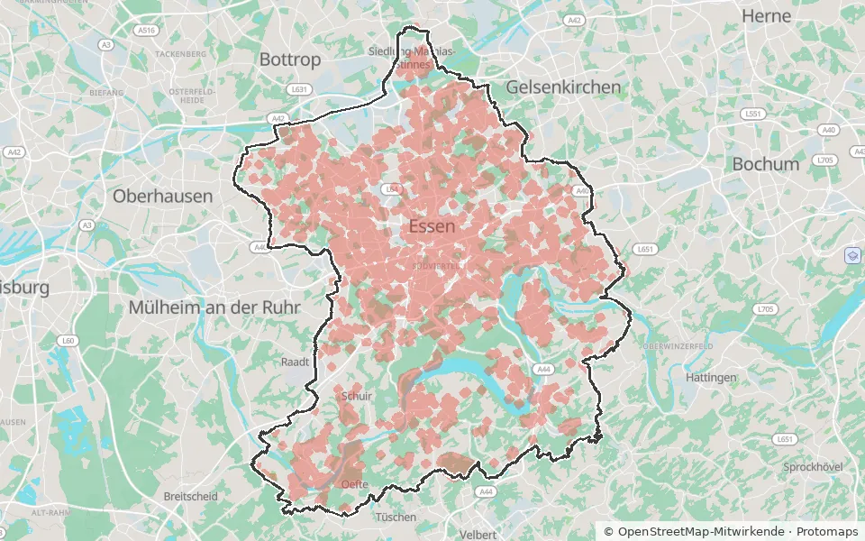
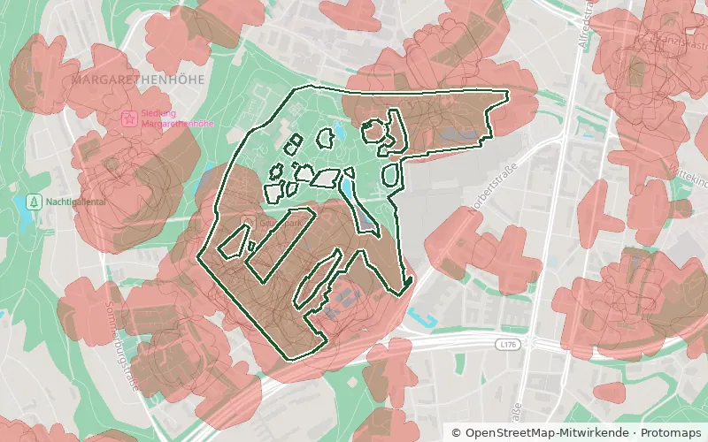
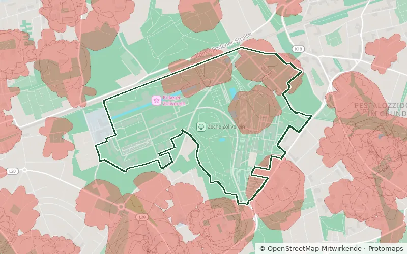
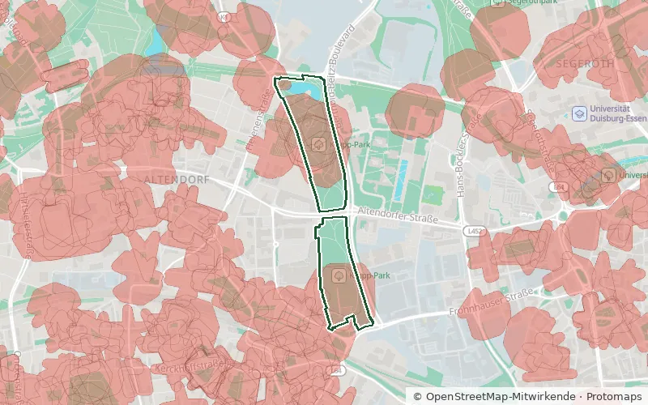
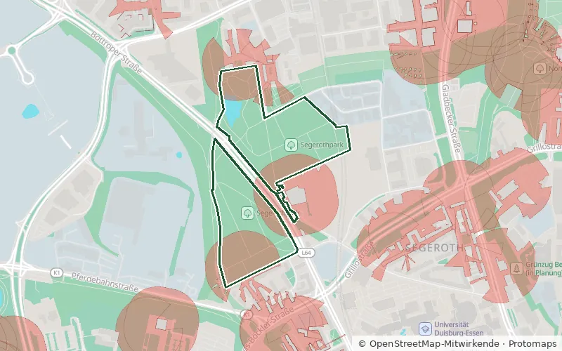
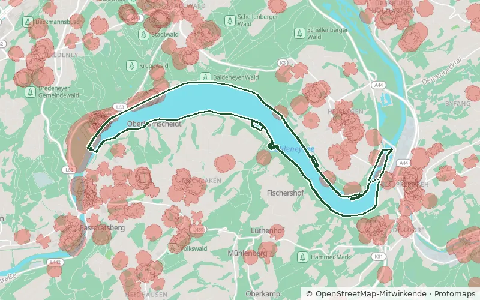
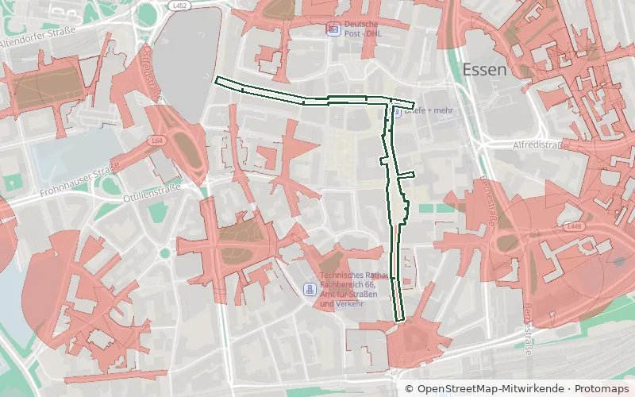

In Essen ist öffentliches Kiffen auf 44 km² verboten, das sind 21,0 % der Stadtfläche von 210 km². Grund sind 2 512 Einrichtungen wie Schulen und Spielplätze: In ihrer Sichtweite, bis 100 Meter vom Eingang und ohne Gebäude dazwischen, verbietet § 5 KCanG den Konsum. Dazu kommen die Fußgängerzonen von 7 bis 20 Uhr und überall die Gegenwart von Minderjährigen.
Ein Fünftel der Stadt ist Wald, vor allem im Süden um den Baldeneysee (20 % der Stadtfläche); ohne den Wald gerechnet liegen 22,6 % in einer Zone.

Woher die Zonen in Essen kommen
| Einrichtung | Anzahl | Zonenfläche |
|---|---|---|
| Schulen | 325 | 9,8 km² |
| Kitas und Kindergärten | 335 | 7,3 km² |
| Kindertagespflege | 15 | 0,2 km² |
| Spielplätze | 837 | 16,4 km² |
| Kinder- und Jugendeinrichtungen | 57 | 1,2 km² |
| Sportstätten | 943 | 21,8 km² |
Jede Art für sich gezählt, Überlappungen also mehrfach. Anbauvereinigungen nur, soweit in OpenStreetMap eingetragen.
Die meisten Zonen gehen auf die 943 Sportstätten zurück, danach auf die 837 Spielplätze.
Anders als Köln oder Dortmund hat Essen keine eigene Regel zu Cannabis auf Spielplätzen; die ordnungsbehördliche Verordnung der Stadt verbietet dort nur Alkohol (Verordnung der Stadt Essen).
Grugapark und Zollverein
Im Grugapark liegen 59 % der Fläche in einer Zone: 13 Spielplätze, 14 Sportanlagen und drei Kitas liegen im Park. Die Parkordnung verbietet Alkohol außerhalb der Gastronomie, zu Rauchen oder Cannabis sagt sie nichts (Parkordnung Grugapark).

Auf dem Gelände der Zeche Zollverein sind es 21 %, um vier Spielplätze, zwei Kitas und Sportanlagen auf dem Gelände. Der Krupp-Park kommt auf 59 %, der Segerothpark an der Universität auf 36 %.



Baldeneysee und Ruhr
Am Baldeneysee liegen 7 % der Wasserfläche in einer Zone, im Baldeneyer Wald 13 %. Auf einem 100 Meter breiten Streifen Land entlang der Ruhr sind es 19 %.

Innenstadt
Die Fußgängerbereiche der Innenstadt hat die Stadt in einem Lageplan zu ihrer Satzung über den Andienungsverkehr abgegrenzt, darunter Kettwiger und Limbecker Straße, Kennedyplatz und Markt (Lageplan von 2004, Satzung); die Pläne für die Fußgängerbereiche in den Stadtteilen sind nicht online. Dort gilt von 7 bis 20 Uhr Konsumverbot; blau sind die Fußgängerbereiche aus OpenStreetMap.
Von Limbecker und Kettwiger Straße liegen außerdem 19 % in einer Sichtweiten-Zone. Der Kennedyplatz liegt außerhalb der Zonen (0 %), der Willy-Brandt-Platz vor dem Hauptbahnhof fast ganz in einer (91 %).

Hochschulen und Stadion
Hochschulen sind nach § 5 KCanG keine Verbotsorte. Der Campus der Universität Duisburg-Essen am Segeroth liegt zu 8 % in einer Zone. Die Stadionordnung an der Hafenstraße und die Hausordnung von Zollverein nennen Cannabis nicht.
Was sonst noch in Essen gilt
In Nordrhein-Westfalen kostet ein Verstoß 50 bis 500 Euro, vor Minderjährigen 300 bis 1.000 Euro (Land NRW). Auf Volksfesten wie Essen Original müssen die Veranstalter Verstöße verhindern, notfalls mit einem Verbot (Erlass, Mai 2024). Eigene Verbotszonen für Cannabis hat Essen nicht (Stand 27. November 2026).
Häufige Fragen zu Essen
Wo darf man in Essen kiffen?
Nach § 5 KCanG außerhalb der roten Flächen, etwa im Baldeneyer Wald am See (13 % in einer Zone). Tagsüber nicht in den Fußgängerzonen der Innenstadt, nie in Gegenwart von Minderjährigen und nicht gegen ein Hausrecht. Weiß heißt nicht sicher erlaubt: Hecken, Bäume und fehlende Einrichtungen kennt die Karte nicht.
Darf man im Grugapark kiffen?
Die Parkordnung verbietet es nicht. Mehr als die Hälfte des Parks liegt aber in Sichtweite eines Spielplatzes, einer Kita oder einer Sportanlage, und in Gegenwart von Kindern und Jugendlichen gilt das Verbot überall.
Wie genau ist das?
Täglich aus OpenStreetMap gerechnet, mit Gebäuden als Sichthindernis; die Zahlen hier sind vom 27. November 2026. Eine Orientierungshilfe, keine Rechtsauskunft (wie gerechnet wird).
Fehlt eine Einrichtung? Korrekturen in OpenStreetMap stehen am Tag darauf auf der Karte; bitte nur eintragen, was es vor Ort gibt.